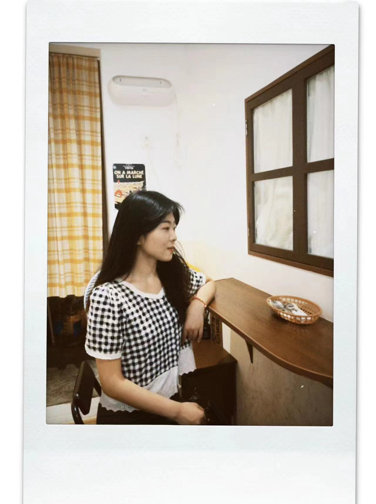
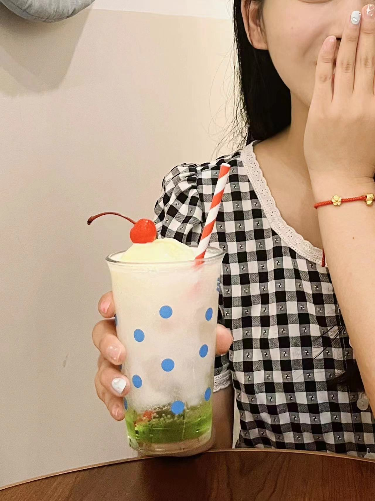

首先映入眼帘的是一张美美的自拍。要我说，你属第一好看。
所以要自信呀~既有绮丽夺目的外表，又有丰盈平和的内心，谁能比你更完美？！
氛围感拉满的一张~世界上真的存在这么浓密黝黑光滑的秀发嘛？~


记得著名的哲学家“沃兹基硕德”曾经说过：拍照拍一半，看了还想看；
哈哈，这说明你已经熟练掌握了拍照的要义。
这张~我知道我知道！在青岛拍的啦~
读万卷书，行万里路。用步履丈量脚下的土地，用行动感受世界的美好。这意味着你已经get到世界公民的乐趣啦~
从南京，到连云港；从青岛，到长沙；从上海，到西安.....不知不觉中，你已经涉足了祖国这么多美好的城市和山水啦~
读书可以使人充盈，而旅行可以滋养心灵。见到更多的风土人情，自然心胸会更包容，更有一种根植万里土壤成长的富饶感。
新的一岁，新的一年，希望你能去到更广阔的舞台，见识更大的世界~